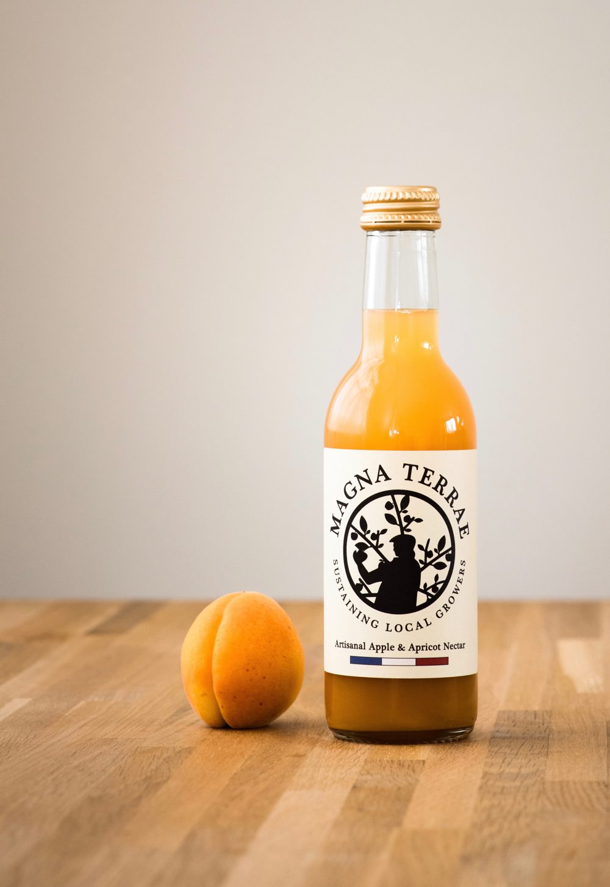

Artisanal Apple & Pear Juice
An authentic mix of pears and apples. Tastes beautiful. Artisanal Product. Workshop Pressed.
33cl

Artisanal Apple & Kiwi Nectar
Mashed kiwis with apple juice. Beautiful. Artisanal Product. Workshop pressed.
25cl

Organic Apple & Blackberry Juice
Thin, light, fresh and authentic. Beautiful apple juice enliven by blackberries. Workshop pressed. 100% Organic.
33cl

Artisanal Apple & Apricot Nectar
Between a juice and a nectar. Mashed Apricot with apple juice. Artisanal product. Workshop pressed.
25cl

Organic Apple Juice
Permaculture grown "Medium" Apple. Not too sweet nor too dry, it tastes just beautiful. Farm pressed. 100% Organic.
33cl

Organic Apple & Raspberry Juice
Permaculture grown Apple & Raspberry Juice. Apple juice enriched by fresh raspberries. Farm pressed. 100% organic.
33cl
Artisanal Cherry Nectar
Sun grown cherries & mineral water. Artisanal Product. Workshop pressed.
25cl